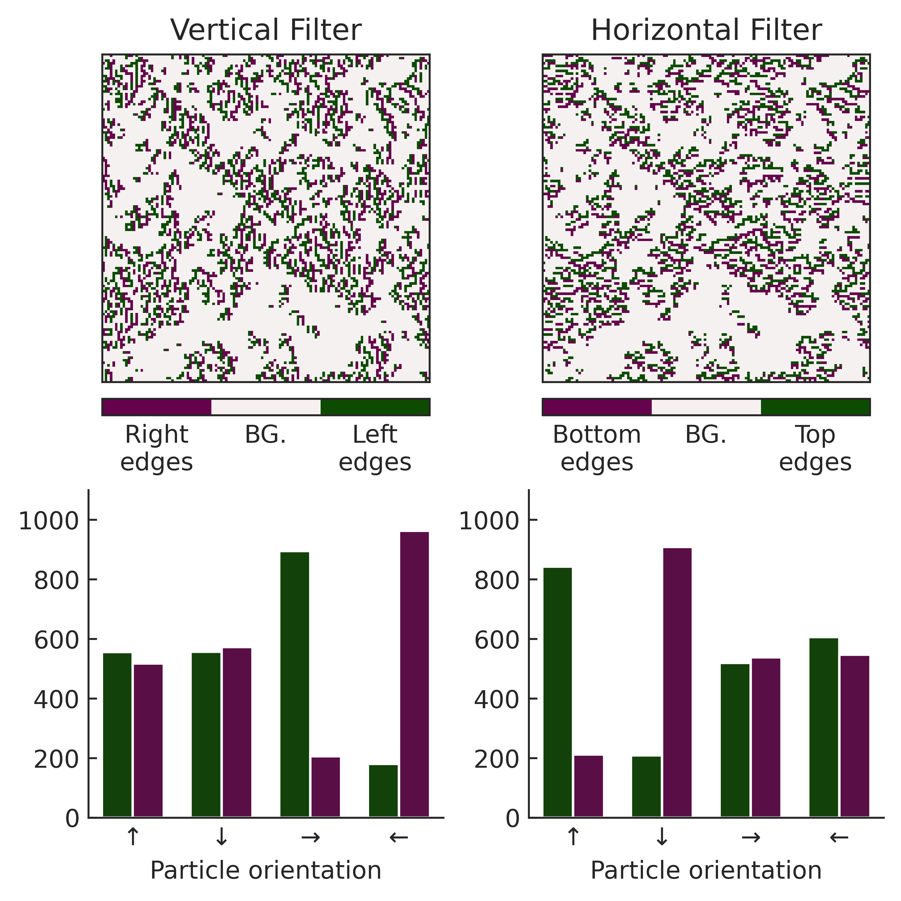
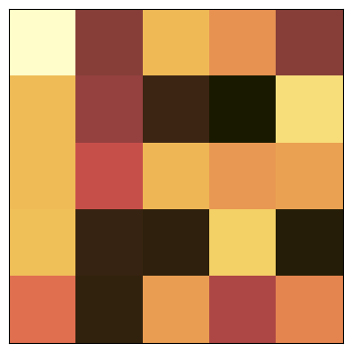
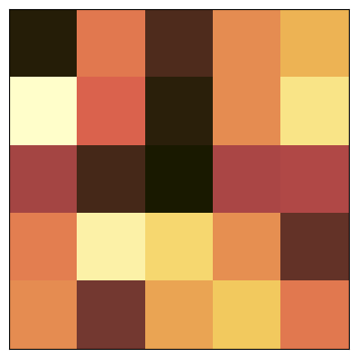
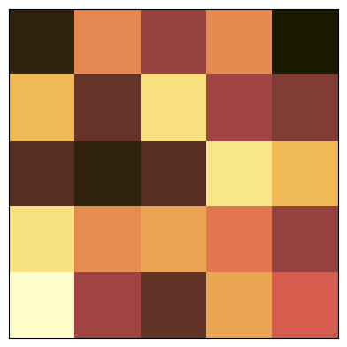

Weeks 20-22
0. Table of Contents
- Introduction
- Cluster Periodicity and Revised Cluster Histograms
- Cluster Number and Size Examination
- Percolation Analysis
- Cluster Edge Orientation
- Feature Map Visualisation (Orientation)
- Feature Map Visualisation (Monochrome)
- Final Averaged Predictions
- Interpolation
- Extrapolation
1. Introduction
The aims of these last few weeks is to finish up experimental analysis, revise some mistakes in previous weeks, as well as prepare figures for the final report. These Weeks will also contain all the final results of analysis that were previously not fully included in the activity log (due to preliminary individual work which was shared at the end between lab partners).
2. Cluster Periodicity
This is an improved version of cluster-analysis.py, which can be found in the src folder. It uses a newer function which separates clusters while keeping boundary periodicity. The jupyter notebook can be found in notebooks/cp_cluster_analysis.ipynb.
Import Libraries
from scipy import ndimage
import numpy as np
import matplotlib.pyplot as plt
import h5py
import cmcrameri #for different cmaps
from mpl_toolkits.axes_grid1.inset_locator import inset_axes
import sys
sys.path.append('./..')
from src.utils import get_cluster_labels,get_ds_iters
#from src.plot_utils import get_plot_configs
from src.training_utils import extract_floats2024-04-11 12:40:58.351512: I tensorflow/core/util/port.cc:113] oneDNN custom operations are on. You may see slightly different numerical results due to floating-point round-off errors from different computation orders. To turn them off, set the environment variable `TF_ENABLE_ONEDNN_OPTS=0`.
2024-04-11 12:40:59.880218: I tensorflow/core/platform/cpu_feature_guard.cc:210] This TensorFlow binary is optimized to use available CPU instructions in performance-critical operations.
To enable the following instructions: AVX2 AVX_VNNI FMA, in other operations, rebuild TensorFlow with the appropriate compiler flags.
2024-04-11 12:41:01.535476: W tensorflow/compiler/tf2tensorrt/utils/py_utils.cc:38] TF-TRT Warning: Could not find TensorRTSet Analysis Conditions
Pt=0.034 #tumble probability
rho=0.3 #particle density
file = ("../data/no-rolling/dataset_tumble_{}_density_{}.h5".format(Pt,rho)) #change this to analyse different file
cmap1 = plt.get_cmap(name="cmc.lajolla") #cmap for first picture
cmap2 = plt.get_cmap(name="cmc.tokyoS") #cmap for second pictureRun Analysis and Plot
hfile = h5py.File(file,"r")
fig, (regplot, clusterplot, clusterhistogram) = plt.subplots (1,3,figsize=(9,3),width_ratios=(1,1,1.3),constrained_layout=True)
iters = get_ds_iters(hfile.keys())
fig.suptitle(r"Cluster Analysis ($P_{tumble}=%.3f$; $\rho=%.3f$)" % (Pt,rho))
#plot regular graph
image = hfile[f"conf_{iters[-1]}"]
regplot.matshow(image,cmap=cmap1)
#plot cluster separation graph
kernel = [[0,1,0],
[1,1,1],
[0,1,0]]
labelled, _ = ndimage.label(image,structure=kernel)
# periodicity establishment
for y in range(labelled.shape[0]):
if labelled[y, 0] > 0 and labelled[y, -1] > 0:
labelled[labelled == labelled[y, -1]] = labelled[y, 0]
for y in range(labelled.shape[1]):
if labelled[y, 0] > 0 and labelled[y, -1] > 0:
labelled[labelled == labelled[y, -1]] = labelled[y, 0]
clusterplot.matshow(labelled,cmap=cmap2)
#plot histogram of obtained clusters
cluster_sizes = np.bincount(labelled.flatten())[1:]
cluster_sizes = np.delete(cluster_sizes,np.where(cluster_sizes==0))
print(cluster_sizes.min(),cluster_sizes.max())
bin_edges = np.logspace(np.log2(cluster_sizes.min()), np.log2(cluster_sizes.max()), 30, base=2)
#bin_edges = np.linspace(cluster_sizes.min(),cluster_sizes.max(),100)
counts, _ = np.histogram(cluster_sizes,bins=bin_edges,density=True)
clusterhistogram.grid(alpha=.4)
clusterhistogram.set_axisbelow(True)
clusterhistogram.scatter(bin_edges[:-1],counts,edgecolor=(0,0,0,1),facecolor=(0,0,0,.5))
clusterhistogram.set_yscale("log"), clusterhistogram.set_xscale("log")
clusterhistogram.set_xlabel("Cluster Size")
fig.colorbar(plt.cm.ScalarMappable(cmap=cmap1),ax=regplot)
fig.colorbar(plt.cm.ScalarMappable(cmap=cmap2),ax=clusterplot)
plt.show()1 414
Array of Cluster Analysis
#plot_configs = get_plot_configs()
#plot_configs["xtick.labelsize"] = 8
#plot_configs["ytick.labelsize"] = 8
#plt.rcParams.update(plot_configs)
fig = plt.figure(figsize=(9 * 3 / 5, 9), constrained_layout=True)
gspec = fig.add_gridspec(5, 3, wspace=0.15, hspace=0.15)
cmap = "cmc.lajolla"
tumbles = [0.016,0.034,0.073,0.157,0.340]
densities = [0.15,0.25,0.35]
files = []
for tumble in tumbles:
for density in densities:
files.append(f"../data/no-rolling/dataset_tumble_{tumble:.3f}_density_{density}.h5")
ctr = 0
for idx in range(5):
for jdx in range(3):
axis = fig.add_subplot(gspec[idx, jdx], autoscale_on=False)
inaxis = inset_axes(axis,width="100%",height="100%",loc="upper right",bbox_to_anchor=(0.56,0.53,.55,.55),bbox_transform=axis.transAxes)
with h5py.File(files[ctr], "r") as fin:
key_list = list(fin.keys())
iter_n = get_ds_iters(key_list)
img = fin[f"conf_{iter_n[-2]}"]
kernel = [[0,1,0],
[1,1,1],
[0,1,0]]
labelled, _ = ndimage.label(img,structure=kernel)
for y in range(labelled.shape[0]):
if labelled[y, 0] > 0 and labelled[y, -1] > 0:
labelled[labelled == labelled[y, -1]] = labelled[y, 0]
for y in range(labelled.shape[1]):
if labelled[y, 0] > 0 and labelled[y, -1] > 0:
labelled[labelled == labelled[y, -1]] = labelled[y, 0]
cluster_sizes = np.bincount(labelled.flatten())[1:]
cluster_sizes = np.delete(cluster_sizes,np.where(cluster_sizes==0))
print(cluster_sizes.min(),cluster_sizes.max())
bin_edges = np.logspace(np.log2(cluster_sizes.min()), np.log2(cluster_sizes.max()), 30, base=2)
#bin_edges = np.linspace(cluster_sizes.min(),cluster_sizes.max(),100)
counts, _ = np.histogram(cluster_sizes,bins=bin_edges,density=True)
axis.grid(alpha=.4)
axis.set_axisbelow(True)
axis.scatter(bin_edges[:-1],counts,edgecolor=(0,0,0,1),facecolor=(0,0,0,.5))
axis.set_yscale("log"), axis.set_xscale("log")
axis.set_xlabel("Cluster Size")
inaxis.matshow(img, cmap=cmap)
inaxis.set_xticks([])
inaxis.set_yticks([])
axis.set_xlim((cluster_sizes.min()-20, cluster_sizes.max()+5))
axis.set_ylim((-20, 200))
axis.set_title(r"$P_{t}=%s$, $ \rho = %s $ " % (tumbles[idx],densities[jdx]))
ctr += 1
fig.supylabel(r"Inverse Tumbling Probability, $P_{tumble}^{-1}$")
fig.supxlabel(r"Density, $\rho$")1 132
1 224
1 593
1 70
1 165
1 434
1 42
1 104
1 254
1 20
1 51
1 115
1 9
1 37
1 82
/tmp/ipykernel_7618/475512023.py:56: UserWarning: Attempt to set non-positive xlim on a log-scaled axis will be ignored.
axis.set_xlim((cluster_sizes.min()-20, cluster_sizes.max()+5))
/tmp/ipykernel_7618/475512023.py:57: UserWarning: Attempt to set non-positive ylim on a log-scaled axis will be ignored.
axis.set_ylim((-20, 200))
Text(0.5, 0.01, 'Density, $\\rho$')
3. Cluster Number and Size Examination
Import Libraries
import warnings
warnings.filterwarnings("ignore")
import sys
sys.path.append('./..')
import h5py
import glob
import re
from scipy import ndimage
import matplotlib.pyplot as plt
import matplotlib.ticker as ticker
from cmcrameri import cm
import numpy as np
import seaborn as sns
import pandas as pd
from src.utils import get_ds_iters, get_cluster_labels
from src.plot_utils import get_plot_configsGet Biggest Cluster + Cluster Count Details
densities = [0.1,0.15,0.2,0.25,0.3,0.35,0.4,0.45,0.5]
tumbles = np.logspace(-6, -1, 10, base=2)
num = []
big = []
ds = []
ts = []
for idx, d in enumerate(densities):
for jdx, t in enumerate(tumbles):
file = f"../data/no-rolling/dataset_tumble_{t:.3f}_density_{d}.h5"
for idx2 in range(500,1000,1):
ds.append(d)
ts.append(t)
labelled, nlabels = get_cluster_labels(file, idx2)
lb = labelled.flatten()
big.append(np.max(np.bincount(lb)[1:]))
num.append(nlabels)Create Dataframe Storage
df = pd.DataFrame()
df.insert(0, "alpha", ts,300)
df.insert(1, "numclus", num)
df.insert(2, "bigsize", big)
df.insert(0, "density", ds,300)
df.to_csv("cache/cluster_count_size.csv")Plot Results
tumbles = np.logspace(-6, -1, 10, base=2)
df = pd.read_csv("cache/cluster_count_size.csv")
df["density"] = ["$%s$" % x for x in df["density"]] #this is a rough fix for the sns hue not working properly when fed floats (we fix it by forcing the floats into a latex string; a regular string would yield the same problem!)
sns.set_style("ticks")
sns.set_style({"xtick.direction": "in","ytick.direction": "in"})
fig, axes = plt.subplots(
2,
1,
figsize=(10, 10),
constrained_layout=True,
dpi=600
)
ax1 = sns.lineplot(ax=axes[0], data=df, x="alpha", y="numclus", errorbar='sd', marker='o', hue="density", palette="cmc.acton")
ax2 = sns.lineplot(ax=axes[1], data=df, x="alpha", y="bigsize", errorbar='sd', marker='o', hue="density", palette="cmc.acton")
ax1.set_ylabel("Cluster count")
ax2.set_ylabel(r"Biggest cluster volume ($a^2$)")
for ax in axes:
ax.set_xscale('log')
ax.set_xlabel(r"Tumbling rate ($P_t$)")
ax.get_xaxis().set_major_formatter(ticker.ScalarFormatter())
ax.set_xticks(np.round(tumbles,3)[::2])
ax2.set_yscale('log')
sns.move_legend(ax1, "upper left", title=r"Density ($\rho$)",ncols=2)
sns.move_legend(ax2, "upper right", title=r"Density ($\rho$)",ncols=3)
sns.despine()
plt.show()
fig.savefig("../plots/cluster_count_size.pdf")4. Percolation Analysis
Import Libraries
import matplotlib.pyplot as plt
import cmcrameri
import h5py
import numpy as np
from scipy import ndimage
import seaborn as sns
import pandas as pd
from cmcrameri import cm
import natsort
import sys
sys.path.append('./..')
from src.utils import get_cluster_labels, get_ds_iters
from src.training_utils import extract_floats
np.set_printoptions(precision=5)2024-04-11 13:23:37.221633: I tensorflow/core/util/port.cc:113] oneDNN custom operations are on. You may see slightly different numerical results due to floating-point round-off errors from different computation orders. To turn them off, set the environment variable `TF_ENABLE_ONEDNN_OPTS=0`.
2024-04-11 13:23:37.255613: I tensorflow/core/platform/cpu_feature_guard.cc:210] This TensorFlow binary is optimized to use available CPU instructions in performance-critical operations.
To enable the following instructions: AVX2 AVX_VNNI FMA, in other operations, rebuild TensorFlow with the appropriate compiler flags.
2024-04-11 13:23:37.701060: W tensorflow/compiler/tf2tensorrt/utils/py_utils.cc:38] TF-TRT Warning: Could not find TensorRTDefine Auxiliary Functions
def get_biggest_cluster_loc(file, idx):
kernel = [[0, 1, 0], [1, 1, 1], [0, 1, 0]]
labelled, _ = get_cluster_labels(file, idx)
lb = labelled.flatten()
cluster_sizes = np.bincount(lb)[1:]
biggest_cluster_id = np.argmax(cluster_sizes) + 1
return np.where(labelled == biggest_cluster_id)
def check_threshold(locs, threshold=20, dim=128):
#print(np.ptp(locs[0]), np.ptp(locs[1]))
if np.ptp(locs[0]) >= 128-threshold:
return True
if np.ptp(locs[1]) >= 128-threshold:
return True
return FalseEstablish Percolation Values
NOTE: this program is set to append, so it will pile on the same data if this notebook is reran.
tumbles = np.logspace(-6,-1,10,base=2)
densities = [0.05,0.1,0.15,0.2,0.25,0.3,0.35,0.4,0.45,0.5]
files = []
for tumble in tumbles:
for density in densities:
files.append(f"../data/no-rolling/dataset_tumble_{tumble:.3f}_density_{density}.h5")
for ctr,file in enumerate(files):
with h5py.File(file, "r") as fin:
key_list = list(fin.keys())
iter_n = get_ds_iters(key_list)
percolating = 0
total = 0
for idx in range(50,1000): #amount of snapshots we have in the data sets
locs = get_biggest_cluster_loc(file,idx)
percolating += check_threshold(locs)
total+=1
ratio = float(percolating) / float(total)
values = extract_floats(file)
output_line = f"{values[0]} {values[1]} {ratio}\n"
with open("cache/percolation.txt", "a") as cache:
cache.write(output_line)
print(output_line,end='')
0.016 0.45 0.8463157894736842
0.023 0.45 0.8010526315789473
0.034 0.45 0.651578947368421
0.050 0.45 0.5063157894736842
0.073 0.45 0.4231578947368421
0.107 0.45 0.4189473684210526
0.157 0.45 0.32105263157894737
0.231 0.45 0.3105263157894737
0.340 0.45 0.24210526315789474
0.500 0.45 0.16631578947368422Read Percolations
with open("cache/percolation.txt", 'r') as cache:
res = cache.readlines()
perc = []
for val in res:
line_list = [float(i) for i in val.split(" ")]
perc.append(line_list[2])
if line_list[2] > 0.75: #frequency threshold for percolating condition is 75%
print(f"tumble {line_list[0]}, dens {line_list[1]} undergoes percolation")
#perc = [float(val.strip('\n')) for val in res[2]]
perc = np.reshape(perc, (10,10))tumble 0.016, dens 0.45 undergoes percolation
tumble 0.016, dens 0.5 undergoes percolation
tumble 0.023, dens 0.45 undergoes percolation
tumble 0.023, dens 0.5 undergoes percolation
tumble 0.034, dens 0.5 undergoes percolation
tumble 0.05, dens 0.5 undergoes percolation
tumble 0.073, dens 0.5 undergoes percolationPlot Results
tumbles = np.logspace(-6,-1,10, base=2)
density = [0.05,0.1,0.15,0.2,0.25,0.3,0.35,0.4,0.45,0.5]
cmap = plt.get_cmap('cmc.acton')
xlabels = np.concatenate(([0,0],tumbles))
ylabels = np.concatenate(([0,0],density))
fig, ax = plt.subplots(1,1, figsize=(5,5), constrained_layout=True)
m = ax.imshow(perc, cmap=cmap.reversed())
cbar = plt.colorbar(ax=ax, mappable=m, location='top', aspect=20, fraction=0.046, pad=0.05)
ax.set_yticklabels(np.round(xlabels,3)[::2])
ax.set_xticklabels(np.round(ylabels,3)[::2])
ax.plot([7.5,7.5,8.5,8.5,9.5],[-0.5,1.5,1.5,4.5,4.5], c='white', linestyle='--')
cbar.ax.set_xlabel('Percolation Frequency')
ax.set_ylabel(r"Tumbling rate ($P_t$)")
ax.set_xlabel(r"Density ($\rho$)")
ax.text(s="Percolating", x=8.75, y=3, c='w', rotation=90, fontsize=16)/tmp/ipykernel_9498/2130497943.py:12: UserWarning: set_ticklabels() should only be used with a fixed number of ticks, i.e. after set_ticks() or using a FixedLocator.
ax.set_yticklabels(np.round(xlabels,3)[::2])
/tmp/ipykernel_9498/2130497943.py:13: UserWarning: set_ticklabels() should only be used with a fixed number of ticks, i.e. after set_ticks() or using a FixedLocator.
ax.set_xticklabels(np.round(ylabels,3)[::2])
Text(8.75, 3, 'Percolating')5. Cluster Orientation Analysis
Import Data
import matplotlib.pyplot as plt
import cmcrameri
import h5py
from mpl_toolkits.axes_grid1.inset_locator import inset_axes
import numpy as np
from scipy import ndimage
import seaborn as sns
import pandas as pd
from cmcrameri import cm
import sys
sys.path.append('./..')
from src.utils import get_cluster_labels, get_ds_iters
from src.waffle_plot import waffle_plot
#from src.plot_utils import get_plot_configs
#plot_configs = get_plot_configs()
#plt.rcParams.update(plot_configs)Define Functions
def plot_labelled_cluster(axis, file, sshot_idx):
cmap_label = plt.get_cmap(name="gnuplot")
#cmap_label = 'cmc.acton'
labelled, _ = get_cluster_labels(file, sshot_idx)
axis.matshow(labelled, cmap=cmap_label)
return axis
def get_biggest_cluster(img):
kernel = [[0, 1, 0], [1, 1, 1], [0, 1, 0]]
labelled, _ = ndimage.label(img, structure=kernel)
lb = labelled.flatten()
cluster_sizes = np.bincount(lb)[1:]
biggest_cluster_id = np.argmax(cluster_sizes)
loc = ndimage.find_objects(labelled)[biggest_cluster_id]
labelled_crop = labelled[loc]
img_crop = img[loc]
labelled_crop[labelled_crop != biggest_cluster_id+1] = 0
labelled_crop[labelled_crop == biggest_cluster_id+1] = 1
img_crop *= labelled_crop
return img_crop, ndimage.center_of_mass(labelled_crop)
def get_edges(img,axis):
img_threshold = np.zeros_like(img)
img_threshold[img > 0] = 1
edges = ndimage.sobel(img_threshold, axis=axis)
#edges[edges > -2] = 0
#edges[edges != 0] = 1
edges *= img
return edges
def map_ori(ori):
ori_mapped = np.zeros_like(ori, dtype=np.float_)
ori_mapped[ori == 1] = np.pi
ori_mapped[ori == 2] = np.pi/2
ori_mapped[ori == 3] = 0
ori_mapped[ori == 4] = -np.pi/2
return ori_mapped
def map_ori_human(ori):
ori_mapped = np.zeros_like(ori, dtype=np.dtype('U100'))
ori_mapped[ori == 3] = "Down"
ori_mapped[ori == 2] = "Right"
ori_mapped[ori == 1] = "Up"
ori_mapped[ori == 4] = "Left"
return ori_mapped
# 0: y, 1: x
def get_ori_and_loc(edges,com):
positions = edges.nonzero()
edges_ori = map_ori(edges[positions[0],positions[1]])
edges_loc = np.arctan2((com[0]-positions[0]),(positions[1]-com[1]))
# CHECK CODE
# colors = ListedColormap(["k", "r", "yellow", "g", "b"])
# edges[edges == 0] = -4
# edges[positions[0],positions[1]] = edges_loc
plt.matshow(edges)
plt.colorbar()
plt.axvline(com[1], c='w')
plt.axhline(com[0], c='w')
return edges_ori, edges_locPlot Cluster Map
import matplotlib as mpl
mpl.rcParams.update(mpl.rcParamsDefault)
sshot_idx = -1
fig, (ax1, ax2) = plt.subplots(1, 2, figsize=(6, 3), constrained_layout=True)
ax1 = plot_labelled_cluster(ax1, "../data/no-rolling/dataset_tumble_0.016_density_0.4.h5", sshot_idx)
ax1.text(
y=-0.1,
x=1,
transform=ax1.transAxes,
ha="right",
s=r"$\alpha = 0.016$",
)
ax2 = plot_labelled_cluster(ax2, "../data/no-rolling/dataset_tumble_0.340_density_0.4.h5", sshot_idx)
ax2.text(
y=-0.1,
x=1,
transform=ax2.transAxes,
ha="right",
s=r"$\alpha = 0.340$",
)
plt.show()
fig.savefig("../plots/cluster_orientation_analysis/cluster_map.svg")
Get Frequency of Up-Down Edge Orientations
hf = h5py.File(f"../data/no-rolling/dataset_tumble_0.016_density_0.4.h5", "r")
iters = get_ds_iters(hf.keys())
img = hf[f"conf_{iters[300]}"]
img = np.array(img)
img2 = get_edges(img, axis=0)
img2[img2<0] = -1
img2[img2>0] = 1
locs_neg = np.where(img2 == -1)
locs_mid = np.where(img2 == 0)
locs_pos = np.where(img2 == 1)
neg = img[locs_neg[0][:],locs_neg[1][:]]
mid = img[locs_mid[0][:],locs_mid[1][:]]
pos = img[locs_pos[0][:],locs_pos[1][:]]
counts = np.column_stack((np.bincount(neg),np.bincount(pos)))[1:]
df = pd.DataFrame({
'Grad': (["Negative"]+["Positive"])*4,
'Orientation': pd.Categorical(
["Up", "Up", "Right", "Right", "Down", "Down", "Left", "Left"],
categories=["Left", "Up", "Right", "Down"]
),
'Frequency': counts.flatten(),
})
df.to_csv("cache/updown_ori_freq.csv")Get Frequency of Left-Right Edge Orientations
hf = h5py.File(f"../data/no-rolling/dataset_tumble_0.016_density_0.4.h5", "r")
iters = get_ds_iters(hf.keys())
img = hf[f"conf_{iters[300]}"]
img = np.array(img)
img2 = get_edges(img, axis=1)
img2[img2<0] = -1
img2[img2>0] = 1
locs_neg = np.where(img2 == -1)
locs_mid = np.where(img2 == 0)
locs_pos = np.where(img2 == 1)
neg = img[locs_neg[0][:],locs_neg[1][:]]
mid = img[locs_mid[0][:],locs_mid[1][:]]
pos = img[locs_pos[0][:],locs_pos[1][:]]
counts = np.column_stack((np.bincount(neg),np.bincount(pos)))[1:]
df = pd.DataFrame({
'Grad': (["Negative"]+["Positive"])*4,
'Orientation': pd.Categorical(
["Up", "Up", "Right", "Right", "Down", "Down", "Left", "Left"],
categories=["Left", "Up", "Right", "Down"]
),
'Frequency': counts.flatten(),
})
df.to_csv("cache/leftright_ori_freq.csv")Get Frequency of Up-Down Scrambled Edge Orientations
hf = h5py.File(f"../data/no-rolling/dataset_tumble_0.016_density_0.4.h5", "r")
iters = get_ds_iters(hf.keys())
img = hf[f"conf_{iters[300]}"]
img = np.array(img)
img[img > 0] = 1
img = img * np.random.randint(1, 5, size=(128, 128))
img2 = get_edges(img, axis=0)
img2[img2<0] = -1
img2[img2>0] = 1
locs_neg = np.where(img2 == -1)
locs_mid = np.where(img2 == 0)
locs_pos = np.where(img2 == 1)
neg = img[locs_neg[0][:],locs_neg[1][:]]
mid = img[locs_mid[0][:],locs_mid[1][:]]
pos = img[locs_pos[0][:],locs_pos[1][:]]
counts = np.column_stack((np.bincount(neg),np.bincount(pos)))[1:]
df = pd.DataFrame({
'Grad': (["Negative"]+["Positive"])*4,
'Orientation': pd.Categorical(
["Up", "Up", "Right", "Right", "Down", "Down", "Left", "Left"],
categories=["Left", "Up", "Right", "Down"]
),
'Frequency': counts.flatten(),
})
df.to_csv("cache/updown_ori_freq_scrambled.csv")Get Frequency of Left-Right Scrambled Edge Orientations
hf = h5py.File(f"../data/no-rolling/dataset_tumble_0.016_density_0.4.h5", "r")
iters = get_ds_iters(hf.keys())
img = hf[f"conf_{iters[300]}"]
img = np.array(img)
img[img > 0] = 1
img = img * np.random.randint(1, 5, size=(128, 128))
img2 = get_edges(img, axis=1)
img2[img2<0] = -1
img2[img2>0] = 1
locs_neg = np.where(img2 == -1)
locs_mid = np.where(img2 == 0)
locs_pos = np.where(img2 == 1)
neg = img[locs_neg[0][:],locs_neg[1][:]]
mid = img[locs_mid[0][:],locs_mid[1][:]]
pos = img[locs_pos[0][:],locs_pos[1][:]]
counts = np.column_stack((np.bincount(neg),np.bincount(pos)))[1:]
df = pd.DataFrame({
'Grad': (["Negative"]+["Positive"])*4,
'Orientation': pd.Categorical(
["Up", "Up", "Right", "Right", "Down", "Down", "Left", "Left"],
categories=["Left", "Up", "Right", "Down"])
,
'Frequency': counts.flatten(),
})
df.to_csv("cache/leftright_ori_freq_scrambled.csv")Plot Cluster Edge Orientations
#mpl.rcParams.update(mpl.rcParamsDefault)
df = pd.read_csv("cache/leftright_ori_freq_scrambled.csv")
#plot_configs = get_plot_configs()
#sns.set(rc=plot_configs)
sns.set_style("ticks")
sns.set_style({"xtick.direction": "in","ytick.direction": "in"})
#plt.rcParams.update(plot_configs)
fig = plt.figure(figsize=(5,5), constrained_layout=True,dpi=600)
#ax0 = fig.add_subplot(
# 1, 1, 1
#)
ax4 = fig.add_subplot(
2, 2, 1
)
ax2 = fig.add_subplot(
2, 2, 2
)
ax3 = fig.add_subplot(
2, 2, 3
)
ax1 = fig.add_subplot(
2, 2, 4
)
hf = h5py.File(f"../data/no-rolling/dataset_tumble_0.016_density_0.4.h5", "r")
iters = get_ds_iters(hf.keys())
img = hf[f"conf_{iters[300]}"]
img = np.array(img)
img_thres = img
img_thres[img_thres>0]=1
#axins = inset_axes(ax4, width="100%", height="100%", borderpad=1)
#axins.set_axes_locator(InsetPosition(ax4, [.7, 1.3, 1, 1]))
#axins.matshow(img_thres, cmap='cmc.oslo')
#axins.tick_params(
# axis = "both",
# which = "both",
# length = 0,
# labelleft = False,
# labeltop = False,
#)
img2 = get_edges(img, axis=0)
img2[img2<0] = -1
img2[img2>0] = 1
cbar = ax2.matshow(img2, cmap=plt.get_cmap(cm.bam, lut=3))
cb = plt.colorbar(cbar, ax=ax2, ticks=np.arange(-1, 1 + 1), values=np.arange(-1, 1 + 1), location='bottom', fraction=0.05)
cb.set_ticklabels(["Bottom\nedges", "BG.", "Top\nedges"])
ax2.tick_params(
axis = "both",
which = "both",
length = 0,
labelleft = False,
labeltop = False,
)
img2 = get_edges(img, axis=1)
img2[img2<0] = -1
img2[img2>0] = 1
cbar = ax4.matshow(img2, cmap=plt.get_cmap(cm.bam, lut=3))
cb = plt.colorbar(cbar, ax=ax4, ticks=np.arange(-1, 1 + 1), values=np.arange(-1, 1 + 1), location='bottom', fraction=0.05)
cb.set_ticklabels(["Right\nedges", "BG.", "Left\nedges"])
ax4.tick_params(
axis = "both",
which = "both",
length = 0,
labelleft = False,
labeltop = False,
)
palette = {'Negative': '#0C4B00', 'Positive': '#65024B' }
df = pd.read_csv("cache/updown_ori_freq.csv")
sns.barplot(ax=ax1, data=df, x='Orientation',y='Frequency', hue='Grad', palette=palette, legend=False, width=0.7, order=["Up","Down","Left","Right"])
ax1.set(xticklabels=[])
#df = pd.read_csv("cache/updown_ori_freq_scrambled.csv")
#sns.barplot(ax=ax2, data=df, x='Orientation',y='Frequency', hue='Grad', palette=palette)
#ax2.set(xlabel=None, xticklabels=[], ylabel=None, yticklabels=[])
#sns.move_legend(ax2, "upper right", bbox_to_anchor=(1, 1.1), frameon=False, title=r"Gradient")
df = pd.read_csv("cache/leftright_ori_freq.csv")
sns.barplot(ax=ax3, data=df, x='Orientation',y='Frequency', hue='Grad', palette=palette, legend=False, width=0.7, order=["Up","Down","Left","Right"])
#df = pd.read_csv("cache/leftright_ori_freq_scrambled.csv")
#sns.barplot(ax=ax5, data=df, x='Orientation',y='Frequency', hue='Grad', palette=palette, legend=False)
#ax5.set(yticklabels=[])
for idx, ax in enumerate((ax1,ax3)):
sns.despine(ax=ax)
ax.set_ylim(0,1100)
ax.set(xlabel=None, ylabel=None)
ax.set_xticklabels(["↑","↓","→","←"])
#ax.set_ylabel('Particle count', fontsize=14)
ax.set_xlabel("Particle orientation")
ax4.set_title("Vertical Filter")
ax2.set_title("Horizontal Filter")
#fig.text(s="(A)",x=0.17, y=0.95)
#fig.text(s="(B)",x=0.52, y=0.95, backgroundcolor=(1,1,1,0.95))
#fig.text(s="(C)",x=0.17, y=0.48)
#fig.text(s="(D)",x=0.52, y=0.48, backgroundcolor=(1,1,1,0.95))
fig.savefig("../plots/cluster_orientation_analysis/cluster_edge_orientations.png", bbox_inches='tight')/tmp/ipykernel_13085/2311038860.py:93: UserWarning: set_ticklabels() should only be used with a fixed number of ticks, i.e. after set_ticks() or using a FixedLocator.
ax.set_xticklabels(["↑","↓","→","←"])
/tmp/ipykernel_13085/2311038860.py:93: UserWarning: set_ticklabels() should only be used with a fixed number of ticks, i.e. after set_ticks() or using a FixedLocator.
ax.set_xticklabels(["↑","↓","→","←"])
Plot Waffle Plot Distribution For Horizontal Filter
df = pd.read_csv("cache/updown_ori_freq.csv")
sns.barplot(ax=ax1, data=df, x='Orientation',y='Frequency', hue='Grad', palette=palette, legend=False)
ax1.set(xticklabels=[])
waffle_plot(df[df['Grad'] == "Positive"]['Orientation'], df[df['Grad'] == "Positive"]['Frequency'], cmap=cm.lipari)
waffle_plot(df[df['Grad'] == "Negative"]['Orientation'], df[df['Grad'] == "Negative"]['Frequency'], cmap=cm.lipari)

Frequency Comparison
df = pd.read_csv("cache/updown_ori_freq.csv")
df2 = pd.read_csv("cache/updown_ori_freq_scrambled.csv")
df3 = pd.read_csv("cache/leftright_ori_freq.csv")
df4 = pd.read_csv("cache/leftright_ori_freq_scrambled.csv")
diff1 = (df[df['Grad'] == "Positive"]['Frequency'].values - df[df['Grad'] == "Negative"]['Frequency'].values)
diff1[[1,2]] = diff1[[2,1]]
diff2 = (df3[df3['Grad'] == "Positive"]['Frequency'].values - df3[df3['Grad'] == "Negative"]['Frequency'].values)
diff2[[1,2]] = diff2[[2,1]]
diff3 = (df2[df2['Grad'] == "Positive"]['Frequency'].values - df2[df2['Grad'] == "Negative"]['Frequency'].values)
diff3[[1,2]] = diff3[[2,1]]
diff4 = (df4[df4['Grad'] == "Positive"]['Frequency'].values - df4[df4['Grad'] == "Negative"]['Frequency'].values)
diff4[[1,2]] = diff4[[2,1]]
ori = np.array(["Up", "Left", "Down", "Right"])
ori[[1,2]] = ori[[2,1]]
len(np.tile(ori,2))
diff_v = pd.DataFrame({
"Difference": np.concatenate((
diff1,
diff2
)),
"Orientation": np.tile(ori,2),
'Context': (["Vertical filter"]*4+["Horizontal filter"]*4)*1,
})
diff_v2 = pd.DataFrame({
"Difference": np.concatenate((
diff3,
diff4,
)),
"Orientation": np.tile(ori,2),
'Context': (["Vertical filter"]*4+["Horizontal filter"]*4)*1,
})fig = plt.figure(figsize=(4,5), constrained_layout=True,dpi=600)
ax1 = sns.barplot(data=diff_v, x='Orientation',y='Difference', palette='cmc.tokyo', hue='Context')
sns.move_legend(ax1, "lower center", bbox_to_anchor=(0.5, 0.1), frameon=False, title=None)
ax1.set(ylabel="Difference between opposing edges")[Text(0, 0.5, 'Difference between opposing edges')]6. Feature Map Analysis (Orientation Data Type)
Import Libraries
import warnings
warnings.filterwarnings("ignore")
import h5py
import numpy as np
import tensorflow as tf
from keras.applications.vgg16 import preprocess_input
from keras.preprocessing.image import img_to_array
from keras.models import Model
import matplotlib.pyplot as plt
from cmcrameri import cm
from numpy import expand_dims
import sys
sys.path.append('./..')
from src.utils import get_cluster_labels, get_ds_iters
from src.training_utils import (
data_load,
split_dataset,
)
from src.plot_utils import get_plot_configs2024-04-08 22:29:35.720088: I tensorflow/core/platform/cpu_feature_guard.cc:210] This TensorFlow binary is optimized to use available CPU instructions in performance-critical operations.
To enable the following instructions: AVX2 FMA, in other operations, rebuild TensorFlow with the appropriate compiler flags.
2024-04-08 22:29:36.831818: W tensorflow/compiler/tf2tensorrt/utils/py_utils.cc:38] TF-TRT Warning: Could not find TensorRTLoad Datasets
hf = h5py.File(f"../data/no-rolling/dataset_tumble_0.050_density_0.25.h5", "r")
iters = get_ds_iters(hf.keys())
img = hf[f"conf_{iters[300]}"]
img = np.array(img)
img = img.reshape((img.shape[0], img.shape[1], 1))
hf = h5py.File(f"../data/no-rolling/dataset_tumble_0.157_density_0.25.h5", "r")
iters = get_ds_iters(hf.keys())
img2 = hf[f"conf_{iters[300]}"]
img2 = np.array(img2)
img2 = img2.reshape((img2.shape[0], img2.shape[1], 1))Example Datamaps (\(P_t \in \{ 0.050,0.157\}\), \(\rho = 0.25\))
plt.matshow(img, cmap='cmc.lajolla')
plt.xticks([])
plt.yticks([])
plt.savefig('../plots/fmaps/input_0.050.svg', bbox_inches='tight', pad_inches=-0.1)
plt.matshow(img2, cmap='cmc.lajolla')
plt.xticks([])
plt.yticks([])
plt.savefig('../plots/fmaps/input_0.157.svg', bbox_inches='tight', pad_inches=-0.1)Set Up GPU and Load Model
Reminder: the following commands need to be ran in console in order to employ GPU. This is not strictly necessary here, since running on the CPU only affects performance (and we are computing very little data here). This is nonetheless a good habit.
export CUDNN_PATH=$(dirname $(python -c "import nvidia.cudnn;print(nvidia.cudnn.__file__)"))
export LD_LIBRARY_PATH=${CUDNN_PATH}/lib
export PATH=/usr/local/nvidia/bin:/usr/local/cuda/bin:$PATHmodel = tf.keras.models.load_model('../models/orientation0216.keras')2024-04-08 22:29:40.971354: I external/local_xla/xla/stream_executor/cuda/cuda_executor.cc:998] successful NUMA node read from SysFS had negative value (-1), but there must be at least one NUMA node, so returning NUMA node zero. See more at https://github.com/torvalds/linux/blob/v6.0/Documentation/ABI/testing/sysfs-bus-pci#L344-L355
2024-04-08 22:29:41.033494: I external/local_xla/xla/stream_executor/cuda/cuda_executor.cc:998] successful NUMA node read from SysFS had negative value (-1), but there must be at least one NUMA node, so returning NUMA node zero. See more at https://github.com/torvalds/linux/blob/v6.0/Documentation/ABI/testing/sysfs-bus-pci#L344-L355
2024-04-08 22:29:41.034172: I external/local_xla/xla/stream_executor/cuda/cuda_executor.cc:998] successful NUMA node read from SysFS had negative value (-1), but there must be at least one NUMA node, so returning NUMA node zero. See more at https://github.com/torvalds/linux/blob/v6.0/Documentation/ABI/testing/sysfs-bus-pci#L344-L355
2024-04-08 22:29:41.036429: I external/local_xla/xla/stream_executor/cuda/cuda_executor.cc:998] successful NUMA node read from SysFS had negative value (-1), but there must be at least one NUMA node, so returning NUMA node zero. See more at https://github.com/torvalds/linux/blob/v6.0/Documentation/ABI/testing/sysfs-bus-pci#L344-L355
2024-04-08 22:29:41.036836: I external/local_xla/xla/stream_executor/cuda/cuda_executor.cc:998] successful NUMA node read from SysFS had negative value (-1), but there must be at least one NUMA node, so returning NUMA node zero. See more at https://github.com/torvalds/linux/blob/v6.0/Documentation/ABI/testing/sysfs-bus-pci#L344-L355
2024-04-08 22:29:41.037016: I external/local_xla/xla/stream_executor/cuda/cuda_executor.cc:998] successful NUMA node read from SysFS had negative value (-1), but there must be at least one NUMA node, so returning NUMA node zero. See more at https://github.com/torvalds/linux/blob/v6.0/Documentation/ABI/testing/sysfs-bus-pci#L344-L355
2024-04-08 22:29:41.144116: I external/local_xla/xla/stream_executor/cuda/cuda_executor.cc:998] successful NUMA node read from SysFS had negative value (-1), but there must be at least one NUMA node, so returning NUMA node zero. See more at https://github.com/torvalds/linux/blob/v6.0/Documentation/ABI/testing/sysfs-bus-pci#L344-L355
2024-04-08 22:29:41.144449: I external/local_xla/xla/stream_executor/cuda/cuda_executor.cc:998] successful NUMA node read from SysFS had negative value (-1), but there must be at least one NUMA node, so returning NUMA node zero. See more at https://github.com/torvalds/linux/blob/v6.0/Documentation/ABI/testing/sysfs-bus-pci#L344-L355
2024-04-08 22:29:41.144621: I external/local_xla/xla/stream_executor/cuda/cuda_executor.cc:998] successful NUMA node read from SysFS had negative value (-1), but there must be at least one NUMA node, so returning NUMA node zero. See more at https://github.com/torvalds/linux/blob/v6.0/Documentation/ABI/testing/sysfs-bus-pci#L344-L355
2024-04-08 22:29:41.144752: I tensorflow/core/common_runtime/gpu/gpu_device.cc:1928] Created device /job:localhost/replica:0/task:0/device:GPU:0 with 4784 MB memory: -> device: 0, name: NVIDIA GeForce RTX 2060, pci bus id: 0000:01:00.0, compute capability: 7.5Plot Feature Maps
The following shows output feature maps from each architecture layer (indicated in titles). Row 0 is low tumbling rate (\(P_t=0.050\)), row 1 is high tumbling rate (\(P_t=0.157\)). Multiple columns indicates multiple emergent feature maps (decided by number of filters) from however many input feature maps the layer takes (dictated by previous layer output maps).
def model_mapper (img,img2,model,layer_number,shift=None,ncols=3,post_avgpool=False,flattened=False,output=False,path=f"../plots/fmaps/"):
model_mini = Model(inputs=model.inputs, outputs=model.layers[layer_number].output)
feature_maps1 = model_mini.predict(img, verbose=0)
feature_maps2 = model_mini.predict(img2, verbose=0)
if post_avgpool == False and flattened == False:
i = 2
j = ncols
for idx in range(i):
for jdx in range(j):
ax = plt.subplot(i, j, idx*j+jdx+1)
ax.set_xticks([])
ax.set_yticks([])
if idx == 0:
plt.imshow(feature_maps1[:shift, :, 0, jdx], cmap='cmc.lajolla')
else:
plt.imshow(feature_maps2[:shift, :, 0, jdx], cmap='cmc.lajolla')
if output == True:
plt.savefig(path+f"layer_{layer_number}.svg",bbox_inches='tight')
if post_avgpool == True and flattened == False: #plots images which do not output multiple filters
plt.matshow(feature_maps1[:, :],cmap='cmc.lajolla')
plt.xticks([])
plt.yticks([])
if output == True:
plt.savefig(path+f"layer_{layer_number}_im1.svg",bbox_inches='tight')
plt.matshow(feature_maps2[:, :],cmap='cmc.lajolla')
plt.xticks([])
plt.yticks([])
if output == True:
plt.savefig(path+f"layer_{layer_number}_im2.svg",bbox_inches='tight')
if post_avgpool == True and flattened == True: #rotates images which do not output multiple filters provided they are flattened (turns vertical to horizontal)
plt.matshow(np.rot90(feature_maps1[:, :]),cmap='cmc.lajolla')
plt.xticks([])
plt.yticks([])
if output == True:
plt.savefig(path+f"layer_{layer_number}_im1.svg",bbox_inches='tight')
plt.matshow(np.rot90(feature_maps2[:, :]),cmap='cmc.lajolla')
plt.xticks([])
plt.yticks([])
if output == True:
plt.savefig(path+f"layer_{layer_number}_im2.svg",bbox_inches='tight')
def kernel_printer(model,layer_number=0,path=f"../plots/fmaps/"):
filters, biases = model.layers[layer_number].get_weights()
print (filters.shape[-1])
for k in range(filters.shape[-1]):
f = filters[:, :, :, k]
plt.matshow(f[:,:,0],cmap="cmc.lajolla")
plt.xticks([])
plt.yticks([])
plt.savefig(path+f"kernel_{k}_layer_{layer_number}.svg",bbox_inches='tight')1. CONV (filters=3,kernel_size=(3,3),padding=‘same’,input_shape=shape)
model_mapper (img,img2,model,shift=None,layer_number=0,output=True)WARNING: All log messages before absl::InitializeLog() is called are written to STDERR
I0000 00:00:1712604581.825443 9317 service.cc:145] XLA service 0x78b0500035e0 initialized for platform CUDA (this does not guarantee that XLA will be used). Devices:
I0000 00:00:1712604581.825508 9317 service.cc:153] StreamExecutor device (0): NVIDIA GeForce RTX 2060, Compute Capability 7.5
2024-04-08 22:29:41.880682: I external/local_xla/xla/stream_executor/cuda/cuda_dnn.cc:465] Loaded cuDNN version 8907
I0000 00:00:1712604582.252356 9317 device_compiler.h:188] Compiled cluster using XLA! This line is logged at most once for the lifetime of the process.Computed with the Following Kernels
kernel_printer(model,layer_number=0,path=f"../plots/fmaps/")3
2. MAXPOOL (pool_size=(2,2),padding=‘same’)
model_mapper (img,img2,model,shift=64,layer_number=1,output=True)3. ReLU
model_mapper (img,img2,model,shift=64,layer_number=2,output=True)2024-04-08 22:29:44.564777: I tensorflow/compiler/mlir/tensorflow/utils/dump_mlir_util.cc:268] disabling MLIR crash reproducer, set env var `MLIR_CRASH_REPRODUCER_DIRECTORY` to enable.4. BN
model_mapper (img,img2,model,shift=64,layer_number=3,output=False)5. CONV (filters=4,kernel_size=(5,5),padding=‘same’)
model_mapper (img,img2,model,shift=64,ncols=4,layer_number=4,output=True)Computed with the Following Kernels
kernel_printer(model,layer_number=4,path=f"../plots/fmaps/")4


6. MAXPOOL (pool_size=(2,2),padding=‘same’)
model_mapper (img,img2,model,shift=32,ncols=4,layer_number=5,output=True)7. ReLU
model_mapper (img,img2,model,shift=32,ncols=4,layer_number=6,output=True)
8. BN
model_mapper (img,img2,model,shift=32,ncols=4,layer_number=7,output=False)9. CONV (filters=6, kernel_size=(5,5),padding=‘same’)
model_mapper (img,img2,model,shift=32,ncols=6,layer_number=8,output=True)kernel_printer(model,layer_number=8,path=f"../plots/fmaps/")6




10. MAXPOOL (pool_size=(2,2),padding=‘same’)
model_mapper (img,img2,model,shift=16,ncols=6,layer_number=9,output=True)11. ReLU
model_mapper (img,img2,model,shift=16,ncols=6,layer_number=10,output=True)
12. BN
model_mapper (img,img2,model,shift=16,ncols=6,layer_number=11,output=False)13. AVGPOOL
model_mapper (img,img2,model,layer_number=12,post_avgpool=True,flattened=True,output=True)
14. DO (0.1) (without layout optimiser)
model_mapper (img,img2,model,layer_number=13,post_avgpool=True,flattened=True,output=False)
15. FC (units=128,activation=‘relu’)
model_mapper (img,img2,model,layer_number=14,post_avgpool=True,flattened=False,output=True)
16. DO (0.1) (without layout optimiser)
model_mapper (img,img2,model,layer_number=15,post_avgpool=True,flattened=False,output=False)
17. FC (units=3,activation=‘relu’)
model_mapper (img,img2,model,layer_number=16,post_avgpool=True,flattened=True,output=True)

18. FLATTEN
model_mapper (img,img2,model,layer_number=17,post_avgpool=True,flattened=True,output=False)19. FC (units=1,activation=‘linear’)
model_mapper (img,img2,model,layer_number=18,post_avgpool=True,flattened=True,output=True)Some notes
The batch normalisation layers do not display any change becase they simply renormalise the data. They are included here for completeness.
The dropout layers don’t actually activate during model predictions. This is a deliberate feature of Keras which we’ve leveraged; the dropout layer helps with dataset training in order to prevent overfitting, but does not eliminate further data during actual prediction applications. They are also included here for completeness.
7. Feature Map Analysis (Monochrome Data Type)
Import Libraries
import warnings
warnings.filterwarnings("ignore")
import h5py
import numpy as np
import tensorflow as tf
from keras.applications.vgg16 import preprocess_input
from keras.preprocessing.image import img_to_array
from keras.models import Model
import matplotlib.pyplot as plt
from cmcrameri import cm
from numpy import expand_dims
import sys
sys.path.append('./..')
from src.utils import get_cluster_labels, get_ds_iters
from src.training_utils import (
data_load,
split_dataset,
)
from src.plot_utils import get_plot_configs2024-04-16 16:15:26.430617: I tensorflow/core/util/port.cc:113] oneDNN custom operations are on. You may see slightly different numerical results due to floating-point round-off errors from different computation orders. To turn them off, set the environment variable `TF_ENABLE_ONEDNN_OPTS=0`.
2024-04-16 16:15:26.456785: I tensorflow/core/platform/cpu_feature_guard.cc:210] This TensorFlow binary is optimized to use available CPU instructions in performance-critical operations.
To enable the following instructions: AVX2 AVX_VNNI FMA, in other operations, rebuild TensorFlow with the appropriate compiler flags.
2024-04-16 16:15:26.925737: W tensorflow/compiler/tf2tensorrt/utils/py_utils.cc:38] TF-TRT Warning: Could not find TensorRTLoad Datasets
hf = h5py.File(f"../data/no-rolling/dataset_tumble_0.050_density_0.25.h5", "r")
iters = get_ds_iters(hf.keys())
img = hf[f"conf_{iters[300]}"]
img = np.array(img)
img[img>0]=1
img = img.reshape((img.shape[0], img.shape[1], 1))
hf = h5py.File(f"../data/no-rolling/dataset_tumble_0.157_density_0.25.h5", "r")
iters = get_ds_iters(hf.keys())
img2 = hf[f"conf_{iters[300]}"]
img2 = np.array(img2)
img2[img2>0]=1
img2 = img2.reshape((img2.shape[0], img2.shape[1], 1))Example Datamaps (\(P_t \in \{ 0.050,0.157\}\), \(\rho = 0.25\))
plt.matshow(img, cmap='cmc.lajolla')
plt.xticks([])
plt.yticks([])
plt.savefig('../plots/fmaps/input_0.050.svg', bbox_inches='tight', pad_inches=-0.1)
plt.matshow(img2, cmap='cmc.lajolla')
plt.xticks([])
plt.yticks([])
plt.savefig('../plots/fmaps/input_0.157.svg', bbox_inches='tight', pad_inches=-0.1)
Set Up GPU and Load Model
Reminder: the following commands need to be ran in console in order to employ GPU. This is not strictly necessary here, since running on the CPU only affects performance (and we are computing very little data here). This is nonetheless a good habit.
export CUDNN_PATH=$(dirname $(python -c "import nvidia.cudnn;print(nvidia.cudnn.__file__)"))
export LD_LIBRARY_PATH=${CUDNN_PATH}/lib
export PATH=/usr/local/nvidia/bin:/usr/local/cuda/bin:$PATHmodel = tf.keras.models.load_model('../models/monochrome0216.keras')2024-04-16 16:15:29.155891: I external/local_xla/xla/stream_executor/cuda/cuda_executor.cc:998] successful NUMA node read from SysFS had negative value (-1), but there must be at least one NUMA node, so returning NUMA node zero. See more at https://github.com/torvalds/linux/blob/v6.0/Documentation/ABI/testing/sysfs-bus-pci#L344-L355
2024-04-16 16:15:29.866598: I external/local_xla/xla/stream_executor/cuda/cuda_executor.cc:998] successful NUMA node read from SysFS had negative value (-1), but there must be at least one NUMA node, so returning NUMA node zero. See more at https://github.com/torvalds/linux/blob/v6.0/Documentation/ABI/testing/sysfs-bus-pci#L344-L355
2024-04-16 16:15:29.866961: I external/local_xla/xla/stream_executor/cuda/cuda_executor.cc:998] successful NUMA node read from SysFS had negative value (-1), but there must be at least one NUMA node, so returning NUMA node zero. See more at https://github.com/torvalds/linux/blob/v6.0/Documentation/ABI/testing/sysfs-bus-pci#L344-L355
2024-04-16 16:15:29.871670: I external/local_xla/xla/stream_executor/cuda/cuda_executor.cc:998] successful NUMA node read from SysFS had negative value (-1), but there must be at least one NUMA node, so returning NUMA node zero. See more at https://github.com/torvalds/linux/blob/v6.0/Documentation/ABI/testing/sysfs-bus-pci#L344-L355
2024-04-16 16:15:29.872067: I external/local_xla/xla/stream_executor/cuda/cuda_executor.cc:998] successful NUMA node read from SysFS had negative value (-1), but there must be at least one NUMA node, so returning NUMA node zero. See more at https://github.com/torvalds/linux/blob/v6.0/Documentation/ABI/testing/sysfs-bus-pci#L344-L355
2024-04-16 16:15:29.872279: I external/local_xla/xla/stream_executor/cuda/cuda_executor.cc:998] successful NUMA node read from SysFS had negative value (-1), but there must be at least one NUMA node, so returning NUMA node zero. See more at https://github.com/torvalds/linux/blob/v6.0/Documentation/ABI/testing/sysfs-bus-pci#L344-L355
2024-04-16 16:15:30.087381: I external/local_xla/xla/stream_executor/cuda/cuda_executor.cc:998] successful NUMA node read from SysFS had negative value (-1), but there must be at least one NUMA node, so returning NUMA node zero. See more at https://github.com/torvalds/linux/blob/v6.0/Documentation/ABI/testing/sysfs-bus-pci#L344-L355
2024-04-16 16:15:30.087495: I external/local_xla/xla/stream_executor/cuda/cuda_executor.cc:998] successful NUMA node read from SysFS had negative value (-1), but there must be at least one NUMA node, so returning NUMA node zero. See more at https://github.com/torvalds/linux/blob/v6.0/Documentation/ABI/testing/sysfs-bus-pci#L344-L355
2024-04-16 16:15:30.087551: I external/local_xla/xla/stream_executor/cuda/cuda_executor.cc:998] successful NUMA node read from SysFS had negative value (-1), but there must be at least one NUMA node, so returning NUMA node zero. See more at https://github.com/torvalds/linux/blob/v6.0/Documentation/ABI/testing/sysfs-bus-pci#L344-L355
2024-04-16 16:15:30.088606: I tensorflow/core/common_runtime/gpu/gpu_device.cc:1928] Created device /job:localhost/replica:0/task:0/device:GPU:0 with 6275 MB memory: -> device: 0, name: NVIDIA GeForce RTX 4060 Laptop GPU, pci bus id: 0000:01:00.0, compute capability: 8.9Plot Feature Maps
The following shows output feature maps from each architecture layer (indicated in titles). Row 0 is low tumbling rate (\(P_t=0.050\)), row 1 is high tumbling rate (\(P_t=0.157\)). Multiple columns indicates multiple emergent feature maps (decided by number of filters) from however many input feature maps the layer takes (dictated by previous layer output maps).
def model_mapper (img,img2,model,layer_number,shift=None,ncols=3,post_avgpool=False,flattened=False,output=False,path=f"../plots/fmaps/"):
model_mini = Model(inputs=model.inputs, outputs=model.layers[layer_number].output)
feature_maps1 = model_mini.predict(img, verbose=0)
feature_maps2 = model_mini.predict(img2, verbose=0)
if post_avgpool == False and flattened == False:
i = 2
j = ncols
for idx in range(i):
for jdx in range(j):
ax = plt.subplot(i, j, idx*j+jdx+1)
ax.set_xticks([])
ax.set_yticks([])
if idx == 0:
plt.imshow(feature_maps1[:shift, :, 0, jdx], cmap='cmc.lajolla')
else:
plt.imshow(feature_maps2[:shift, :, 0, jdx], cmap='cmc.lajolla')
if output == True:
plt.savefig(path+f"layer_{layer_number}.svg",bbox_inches='tight')
if post_avgpool == True and flattened == False: #plots images which do not output multiple filters
plt.matshow(feature_maps1[:, :],cmap='cmc.lajolla')
plt.xticks([])
plt.yticks([])
if output == True:
plt.savefig(path+f"layer_{layer_number}_im1.svg",bbox_inches='tight')
plt.matshow(feature_maps2[:, :],cmap='cmc.lajolla')
plt.xticks([])
plt.yticks([])
if output == True:
plt.savefig(path+f"layer_{layer_number}_im2.svg",bbox_inches='tight')
if post_avgpool == True and flattened == True: #rotates images which do not output multiple filters provided they are flattened (turns vertical to horizontal)
plt.matshow(np.rot90(feature_maps1[:, :]),cmap='cmc.lajolla')
plt.xticks([])
plt.yticks([])
if output == True:
plt.savefig(path+f"layer_{layer_number}_im1.svg",bbox_inches='tight')
plt.matshow(np.rot90(feature_maps2[:, :]),cmap='cmc.lajolla')
plt.xticks([])
plt.yticks([])
if output == True:
plt.savefig(path+f"layer_{layer_number}_im2.svg",bbox_inches='tight')
def kernel_printer(model,layer_number=0,path=f"../plots/fmaps/"):
filters, biases = model.layers[layer_number].get_weights()
print (filters.shape[-1])
for k in range(filters.shape[-1]):
f = filters[:, :, :, k]
plt.matshow(f[:,:,0],cmap="cmc.lajolla")
plt.xticks([])
plt.yticks([])
plt.savefig(path+f"kernel_{k}_layer_{layer_number}.svg",bbox_inches='tight')1. CONV (filters=3,kernel_size=(3,3),padding=‘same’,input_shape=shape)
model_mapper (img,img2,model,shift=None,layer_number=0,output=True)WARNING: All log messages before absl::InitializeLog() is called are written to STDERR
I0000 00:00:1713280530.466361 8794 service.cc:145] XLA service 0x78dc1c002cf0 initialized for platform CUDA (this does not guarantee that XLA will be used). Devices:
I0000 00:00:1713280530.466396 8794 service.cc:153] StreamExecutor device (0): NVIDIA GeForce RTX 4060 Laptop GPU, Compute Capability 8.9
2024-04-16 16:15:30.560875: I external/local_xla/xla/stream_executor/cuda/cuda_dnn.cc:465] Loaded cuDNN version 8907
I0000 00:00:1713280531.625524 8794 device_compiler.h:188] Compiled cluster using XLA! This line is logged at most once for the lifetime of the process.
Computed with the Following Kernels
kernel_printer(model,layer_number=0,path=f"../plots/fmaps/")3


2. MAXPOOL (pool_size=(2,2),padding=‘same’)
model_mapper (img,img2,model,shift=64,layer_number=1,output=True)3. ReLU
model_mapper (img,img2,model,shift=64,layer_number=2,output=True)2024-04-16 16:15:32.456222: I tensorflow/compiler/mlir/tensorflow/utils/dump_mlir_util.cc:268] disabling MLIR crash reproducer, set env var `MLIR_CRASH_REPRODUCER_DIRECTORY` to enable.4. BN
model_mapper (img,img2,model,shift=64,layer_number=3,output=False)5. CONV (filters=4,kernel_size=(5,5),padding=‘same’)
model_mapper (img,img2,model,shift=64,ncols=4,layer_number=4,output=True)Computed with the Following Kernels
kernel_printer(model,layer_number=4,path=f"../plots/fmaps/")4

6. MAXPOOL (pool_size=(2,2),padding=‘same’)
model_mapper (img,img2,model,shift=32,ncols=4,layer_number=5,output=True)
7. ReLU
model_mapper (img,img2,model,shift=32,ncols=4,layer_number=6,output=True)8. BN
model_mapper (img,img2,model,shift=32,ncols=4,layer_number=7,output=False)
9. CONV (filters=6, kernel_size=(5,5),padding=‘same’)
model_mapper (img,img2,model,shift=32,ncols=6,layer_number=8,output=True)
kernel_printer(model,layer_number=8,path=f"../plots/fmaps/")6


10. MAXPOOL (pool_size=(2,2),padding=‘same’)
model_mapper (img,img2,model,shift=16,ncols=6,layer_number=9,output=True)11. ReLU
model_mapper (img,img2,model,shift=16,ncols=6,layer_number=10,output=True)
12. BN
model_mapper (img,img2,model,shift=16,ncols=6,layer_number=11,output=False)
13. AVGPOOL
model_mapper (img,img2,model,layer_number=12,post_avgpool=True,flattened=True,output=True)

14. DO (0.1) (without layout optimiser)
model_mapper (img,img2,model,layer_number=13,post_avgpool=True,flattened=True,output=False)
15. FC (units=128,activation=‘relu’)
model_mapper (img,img2,model,layer_number=14,post_avgpool=True,flattened=False,output=True)

16. DO (0.1) (without layout optimiser)
model_mapper (img,img2,model,layer_number=15,post_avgpool=True,flattened=False,output=False)

17. FC (units=3,activation=‘relu’)
model_mapper (img,img2,model,layer_number=16,post_avgpool=True,flattened=True,output=True)

18. FLATTEN
model_mapper (img,img2,model,layer_number=17,post_avgpool=True,flattened=True,output=False)
19. FC (units=1,activation=‘linear’)
model_mapper (img,img2,model,layer_number=18,post_avgpool=True,flattened=True,output=True)Some notes
The batch normalisation layers do not display any change becase they simply renormalise the data. They are included here for completeness.
The dropout layers don’t actually activate during model predictions. This is a deliberate feature of Keras which we’ve leveraged; the dropout layer helps with dataset training in order to prevent overfitting, but does not eliminate further data during actual prediction applications. They are also included here for completeness.
8. Final Averaged Predictions
Import packages
import numpy as np
import h5py
import glob
import re
import tensorflow as tf
import matplotlib.pyplot as plt
import matplotlib.ticker as ticker
from scipy.stats import pearsonr
import sys
sys.path.append('./..')
from src.training_utils import data_load, extract_floats, split_dataset, predict_multi_by_name, plot_violin_and_statistics,cross_mean_err_calculator
from tensorflow import keras
from keras import backend as K
from tensorflow.keras.models import Sequential
from tensorflow.keras.layers import Dense,Conv2D,Flatten,Dropout,MaxPooling2D,BatchNormalization,AveragePooling2D,LeakyReLU,GlobalAveragePooling2D,ReLU
from cmcrameri import cm
import seaborn as sns
import pandas as pd
np.set_printoptions(precision=3, suppress=True)2024-04-15 22:46:20.013183: I tensorflow/core/util/port.cc:113] oneDNN custom operations are on. You may see slightly different numerical results due to floating-point round-off errors from different computation orders. To turn them off, set the environment variable `TF_ENABLE_ONEDNN_OPTS=0`.
2024-04-15 22:46:20.126745: I tensorflow/core/platform/cpu_feature_guard.cc:210] This TensorFlow binary is optimized to use available CPU instructions in performance-critical operations.
To enable the following instructions: AVX2 AVX_VNNI FMA, in other operations, rebuild TensorFlow with the appropriate compiler flags.
2024-04-15 22:46:22.013569: W tensorflow/compiler/tf2tensorrt/utils/py_utils.cc:38] TF-TRT Warning: Could not find TensorRTSet seed (optional)
fixed_seed = 216 #choose seed (comment out if not needed)
if 'fixed_seed' in locals():
keras.utils.set_random_seed(fixed_seed)
print("Running program with fixed seed:",fixed_seed)
else:
print("Running program with random seed.")Running program with fixed seed: 216Setup GPU
First, follow instructions here, or alternatively run:
for a in /sys/bus/pci/devices/*; do echo 0 | sudo tee -a $a/numa_node; doneWe do this as a workaround for this error:
gpu_devices = tf.config.experimental.list_physical_devices('GPU')
for device in gpu_devices:
tf.config.experimental.set_memory_growth(device, True)
print(tf.config.list_physical_devices('GPU'), tf.test.gpu_device_name())
print("TF Version:",tf.__version__)[PhysicalDevice(name='/physical_device:GPU:0', device_type='GPU')] /device:GPU:0
TF Version: 2.16.1
2024-04-15 22:46:24.894395: I external/local_xla/xla/stream_executor/cuda/cuda_executor.cc:998] successful NUMA node read from SysFS had negative value (-1), but there must be at least one NUMA node, so returning NUMA node zero. See more at https://github.com/torvalds/linux/blob/v6.0/Documentation/ABI/testing/sysfs-bus-pci#L344-L355
2024-04-15 22:46:25.097387: I external/local_xla/xla/stream_executor/cuda/cuda_executor.cc:998] successful NUMA node read from SysFS had negative value (-1), but there must be at least one NUMA node, so returning NUMA node zero. See more at https://github.com/torvalds/linux/blob/v6.0/Documentation/ABI/testing/sysfs-bus-pci#L344-L355
2024-04-15 22:46:25.097511: I external/local_xla/xla/stream_executor/cuda/cuda_executor.cc:998] successful NUMA node read from SysFS had negative value (-1), but there must be at least one NUMA node, so returning NUMA node zero. See more at https://github.com/torvalds/linux/blob/v6.0/Documentation/ABI/testing/sysfs-bus-pci#L344-L355
2024-04-15 22:46:25.100146: I external/local_xla/xla/stream_executor/cuda/cuda_executor.cc:998] successful NUMA node read from SysFS had negative value (-1), but there must be at least one NUMA node, so returning NUMA node zero. See more at https://github.com/torvalds/linux/blob/v6.0/Documentation/ABI/testing/sysfs-bus-pci#L344-L355
2024-04-15 22:46:25.100239: I external/local_xla/xla/stream_executor/cuda/cuda_executor.cc:998] successful NUMA node read from SysFS had negative value (-1), but there must be at least one NUMA node, so returning NUMA node zero. See more at https://github.com/torvalds/linux/blob/v6.0/Documentation/ABI/testing/sysfs-bus-pci#L344-L355
2024-04-15 22:46:25.100292: I external/local_xla/xla/stream_executor/cuda/cuda_executor.cc:998] successful NUMA node read from SysFS had negative value (-1), but there must be at least one NUMA node, so returning NUMA node zero. See more at https://github.com/torvalds/linux/blob/v6.0/Documentation/ABI/testing/sysfs-bus-pci#L344-L355
2024-04-15 22:46:25.201387: I external/local_xla/xla/stream_executor/cuda/cuda_executor.cc:998] successful NUMA node read from SysFS had negative value (-1), but there must be at least one NUMA node, so returning NUMA node zero. See more at https://github.com/torvalds/linux/blob/v6.0/Documentation/ABI/testing/sysfs-bus-pci#L344-L355
2024-04-15 22:46:25.201471: I external/local_xla/xla/stream_executor/cuda/cuda_executor.cc:998] successful NUMA node read from SysFS had negative value (-1), but there must be at least one NUMA node, so returning NUMA node zero. See more at https://github.com/torvalds/linux/blob/v6.0/Documentation/ABI/testing/sysfs-bus-pci#L344-L355
2024-04-15 22:46:25.201526: I external/local_xla/xla/stream_executor/cuda/cuda_executor.cc:998] successful NUMA node read from SysFS had negative value (-1), but there must be at least one NUMA node, so returning NUMA node zero. See more at https://github.com/torvalds/linux/blob/v6.0/Documentation/ABI/testing/sysfs-bus-pci#L344-L355
2024-04-15 22:46:25.201574: I tensorflow/core/common_runtime/gpu/gpu_device.cc:1928] Created device /device:GPU:0 with 6187 MB memory: -> device: 0, name: NVIDIA GeForce RTX 4060 Laptop GPU, pci bus id: 0000:01:00.0, compute capability: 8.9Define Functions
def violin_plotter (v,y_val,adjustment,legloc="upper left"):
bins = np.logspace(-6,-1,10, base=2)*0.85
#v = prediction2.T[0]
colors = cm.batlowS(np.digitize(v, bins))
colors_actual = cm.batlowS(np.digitize(np.unique(y_val),bins))
fig, (ax1,ax2) = plt.subplots(nrows=2,ncols=1,figsize=(9,6),dpi=600)
df = pd.DataFrame()
df.insert(0, "predicted", v - y_val)
df.insert(1, "actual", y_val)
sns.violinplot(
ax=ax1,
data=df,
x="actual",
y="predicted",
color="w",
alpha=0.7,
density_norm="width",
linewidth=1,
inner="box",
inner_kws={"box_width": 4, "color": "0.2"},
)
ax1.set_xlabel("Actual turning rate")
ax1.set_ylabel(r"Prediction Difference $P_{pred}-P_{true}$")
std = []
means = []
overlap = []
std_div = []
accuracy = 5e-3
print ("Prediction means and standard deviations.")
for val in np.unique(y_val):
v_mapped = v[np.where(y_val == val)]
stdev = np.std(v_mapped)
std.append(stdev)
mean = np.mean(v_mapped)
overlap.append((val + accuracy >= np.min(v_mapped)) & (val - accuracy <= np.max(v_mapped)))
within_std = abs(val-mean)/stdev
print (f"Actual value {val}: Average = {mean:.5f} +- {stdev:.5f}; Expected value within {within_std:.3f} stdevs of mean")
std_div.append(within_std)
print(f"With accuracy {accuracy}, overlap ratio:", np.sum(overlap)/len(overlap))
print("(Min, Max, Avg) STD:", np.min(std), np.max(std), np.mean(std))
print("Pearson's correlation coeff: ", pearsonr(y_val, v).statistic)
for val in np.unique(y_val):
v_mapped = v[np.where(y_val == val)]
means.append(np.mean(v_mapped))
ax2.errorbar(np.sort(np.unique(y_val)),np.abs(means-np.sort(np.unique(y_val))),yerr=(std),ecolor='black',elinewidth=0.5,capsize=3,color='purple',label=r'$|\langle P_{pred} \rangle -P_{true}|$')
ax2.plot(np.sort(np.unique(y_val)),np.zeros(np.unique(y_val).shape[0]),color='red',label='True value line',linestyle='dotted',alpha=0.5)
ax2.legend(loc=legloc)
counter = 0
for i in np.sort(np.unique(y_val)):
ax2.text(i,adjustment,f"${std_div[counter]:.3f} \sigma$",ha="center")
counter = counter + 1
ax2.set_xscale("log")
ax2.get_xaxis().set_major_formatter(ticker.ScalarFormatter())
ax2.set_xticks(np.unique(y_val))
ax2.set_xlabel("Actual turning rate")
ax2.set_ylabel("Absolute mean prediction difference")
fig.tight_layout()Import and prepare data
set model1 to have orientation, model2 to be monochrome, model3 to be scrambled
#all alphas: [0.016,0.023,0.034,0.050,0.073,0.107,0.157,0.231,0.340,0.500]
#all densities: [0.05,0.10,0.15,0.20,0.25,0.30,0.35,0.40,0.45,0.50,0.55,0.60,0.65,0.70,0.75,0.80,0.85,0.90,0.95]
x1,y1,shape1 = data_load(alphas=[0.016,0.023,0.034,0.050,0.073,0.1067,0.157,0.231,0.340,0.500], densities=[0.25],orientation=True,scrambled=False)
x2,y2,shape2 = data_load(alphas=[0.016,0.023,0.034,0.050,0.073,0.1067,0.157,0.231,0.340,0.500], densities=[0.25],orientation=False,scrambled=False)
x3,y3,shape3 = data_load(alphas=[0.016,0.023,0.034,0.050,0.073,0.1067,0.157,0.231,0.340,0.500], densities=[0.25],orientation=False,scrambled=True)We have N * number of unique alpha snapshots total, we split them into training set and a validation set with the ratio 80/20:
print("Orientation model:")
x_train1, y_train1, x_val1, y_val1 = split_dataset(x1,y1,last=int(len(x1)*1)) #len(x)*1 means no training, only validation!
x_train2, y_train2, x_val2, y_val2 = split_dataset(x2,y2,last=int(len(x1)*1)) #len(x)*1 means no training, only validation!
x_train3, y_train3, x_val3, y_val3 = split_dataset(x3,y3,last=int(len(x1)*1)) #len(x)*1 means no training, only validation!
Orientation model:
Number of unique alpha: 10
Shape of x: (10000, 128, 128, 1)
Shape of y: (10000,)
Size of training data: 0
Size of validation data: 10000
Number of unique alpha: 10
Shape of x: (10000, 128, 128, 1)
Shape of y: (10000,)
Size of training data: 0
Size of validation data: 10000
Number of unique alpha: 10
Shape of x: (10000, 128, 128, 1)
Shape of y: (10000,)
Size of training data: 0
Size of validation data: 10000fig, (ax1,ax2,ax3) = plt.subplots(nrows=1,ncols=3)
ax1.matshow(x_val1[500],cmap=plt.get_cmap(name="gnuplot",lut=5))
ax2.matshow(x_val2[500],cmap=plt.get_cmap(name="gnuplot",lut=5))
ax3.matshow(x_val3[500],cmap=plt.get_cmap(name="gnuplot",lut=5))<matplotlib.image.AxesImage at 0x7f253eff1030>
Predict multiple models
models_one = ['orientation0216','orientation0226','orientation0236','orientation0246','orientation0256','orientation0266','orientation0276','orientation0286','orientation0296','orientation0306'] #array of model names
models_two = ['monochrome0216','monochrome0226','monochrome0236','monochrome0246','monochrome0256','monochrome0266','monochrome0276','monochrome0286','monochrome0296','monochrome0306'] # array of model names
models_three = ['scrambled0216','scrambled0226','scrambled0236','scrambled0246','scrambled0256','scrambled0266','scrambled0276','scrambled0286','scrambled0296','scrambled0306'] # array of model names
one_pred_of_one, one_actuals_of_one = predict_multi_by_name(models_one,x_val1,y_val1)
one_pred_of_two, one_actuals_of_two = predict_multi_by_name(models_one,x_val2,y_val2)
one_pred_of_three, one_actuals_of_three = predict_multi_by_name(models_one,x_val3,y_val3)
two_pred_of_two, two_actuals_of_two = predict_multi_by_name(models_two,x_val2,y_val2)
two_pred_of_one, two_actuals_of_one = predict_multi_by_name(models_two,x_val1,y_val1)
two_pred_of_three, two_actuals_of_three = predict_multi_by_name(models_two,x_val3,y_val3)
three_pred_of_three, three_actuals_of_three = predict_multi_by_name(models_three,x_val3,y_val3)
three_pred_of_one, three_actuals_of_one = predict_multi_by_name(models_three,x_val1,y_val1)
three_pred_of_two, three_actuals_of_two = predict_multi_by_name(models_three,x_val2,y_val2)2024-04-15 22:46:33.673278: I external/local_xla/xla/stream_executor/cuda/cuda_executor.cc:998] successful NUMA node read from SysFS had negative value (-1), but there must be at least one NUMA node, so returning NUMA node zero. See more at https://github.com/torvalds/linux/blob/v6.0/Documentation/ABI/testing/sysfs-bus-pci#L344-L355
2024-04-15 22:46:33.673415: I external/local_xla/xla/stream_executor/cuda/cuda_executor.cc:998] successful NUMA node read from SysFS had negative value (-1), but there must be at least one NUMA node, so returning NUMA node zero. See more at https://github.com/torvalds/linux/blob/v6.0/Documentation/ABI/testing/sysfs-bus-pci#L344-L355
2024-04-15 22:46:33.673470: I external/local_xla/xla/stream_executor/cuda/cuda_executor.cc:998] successful NUMA node read from SysFS had negative value (-1), but there must be at least one NUMA node, so returning NUMA node zero. See more at https://github.com/torvalds/linux/blob/v6.0/Documentation/ABI/testing/sysfs-bus-pci#L344-L355
2024-04-15 22:46:33.673546: I external/local_xla/xla/stream_executor/cuda/cuda_executor.cc:998] successful NUMA node read from SysFS had negative value (-1), but there must be at least one NUMA node, so returning NUMA node zero. See more at https://github.com/torvalds/linux/blob/v6.0/Documentation/ABI/testing/sysfs-bus-pci#L344-L355
2024-04-15 22:46:33.673596: I external/local_xla/xla/stream_executor/cuda/cuda_executor.cc:998] successful NUMA node read from SysFS had negative value (-1), but there must be at least one NUMA node, so returning NUMA node zero. See more at https://github.com/torvalds/linux/blob/v6.0/Documentation/ABI/testing/sysfs-bus-pci#L344-L355
2024-04-15 22:46:33.673640: I tensorflow/core/common_runtime/gpu/gpu_device.cc:1928] Created device /job:localhost/replica:0/task:0/device:GPU:0 with 6187 MB memory: -> device: 0, name: NVIDIA GeForce RTX 4060 Laptop GPU, pci bus id: 0000:01:00.0, compute capability: 8.9
WARNING: All log messages before absl::InitializeLog() is called are written to STDERR
I0000 00:00:1713217594.529131 80228 service.cc:145] XLA service 0x7f223c004550 initialized for platform CUDA (this does not guarantee that XLA will be used). Devices:
I0000 00:00:1713217594.529189 80228 service.cc:153] StreamExecutor device (0): NVIDIA GeForce RTX 4060 Laptop GPU, Compute Capability 8.9
2024-04-15 22:46:34.535575: I tensorflow/compiler/mlir/tensorflow/utils/dump_mlir_util.cc:268] disabling MLIR crash reproducer, set env var `MLIR_CRASH_REPRODUCER_DIRECTORY` to enable.
2024-04-15 22:46:34.563498: I external/local_xla/xla/stream_executor/cuda/cuda_dnn.cc:465] Loaded cuDNN version 8907
I0000 00:00:1713217595.037178 80228 device_compiler.h:188] Compiled cluster using XLA! This line is logged at most once for the lifetime of the process.Combined plots
#predictions on own kind
#means1,std1,means2,std2,means3,std3=cross_mean_err_calculator(one_pred_of_one,one_actuals_of_one,two_pred_of_two,two_actuals_of_two,three_pred_of_three,three_actuals_of_three,three_cases=True)
fig, (ax1,ax2) = plt.subplots(nrows=1,ncols=2,figsize=(11,6),dpi=600)
#NOTE: I've commented out the previous method of plotting due to its inelegance, but I have kept it for posterity as a way of plotting error bands without seaborn.
#ONE ON ONE
#ax1.errorbar(np.sort(np.unique(orientation_actuals_of_orientation)),np.abs(means1-np.sort(np.unique(orientation_actuals_of_orientation))),yerr=(std1),ecolor='blue',elinewidth=0.5,capsize=3,color='blue',label="Trained Orientation Predicting Orientation")
#ax1.plot(np.sort(np.unique(one_actuals_of_one)),np.abs(means1-np.sort(np.unique(one_actuals_of_one))),'b-',label="Trained Orientation Predicting Orientation")
#ax1.fill_between(np.sort(np.unique(one_actuals_of_one)),np.abs(means1-np.sort(np.unique(one_actuals_of_one)))-std1,np.abs(means1-np.sort(np.unique(one_actuals_of_one)))+std1,color='b',alpha=0.25)
#TWO ON TWO
#ax1.errorbar(np.sort(np.unique(monochrome_actuals_of_monochrome)),np.abs(means2-np.sort(np.unique(monochrome_actuals_of_monochrome))),yerr=(std2),ecolor='red',elinewidth=0.5,capsize=3,color='red',label="Trained Monochrome Predicting Monochrome")
#ax1.plot(np.sort(np.unique(two_actuals_of_two)),np.abs(means2-np.sort(np.unique(two_actuals_of_two))),'r-',label="Trained Monochrome Predicting Monochrome")
#ax1.fill_between(np.sort(np.unique(two_actuals_of_two)),np.abs(means2-np.sort(np.unique(two_actuals_of_two)))-std2,np.abs(means2-np.sort(np.unique(two_actuals_of_two)))+std2,color='r',alpha=0.25)
#THREE ON THREE
#ax1.plot(np.sort(np.unique(three_actuals_of_three)),np.abs(means3-np.sort(np.unique(three_actuals_of_three))),'g-',label="Trained Scrambled Predicting Scrambled")
#ax1.fill_between(np.sort(np.unique(three_actuals_of_three)),np.abs(means3-np.sort(np.unique(three_actuals_of_three)))-std3,np.abs(means3-np.sort(np.unique(three_actuals_of_three)))+std3,color='g',alpha=0.25)
#ZERO LINE, LEGEND, AX1 PLOT CONFIG
#ax1.plot(np.sort(np.unique(one_actuals_of_one)),np.zeros(np.unique(one_actuals_of_one).shape[0]),color='black',label='True value line',linestyle='dotted',alpha=0.5)
#ax1.legend(loc='upper left')
#ax1.set_xscale("log")
#ax1.get_xaxis().set_major_formatter(ticker.ScalarFormatter())
#ax1.set_xticks(np.unique(y_val1))
#ax1.set_xlabel("Actual turning rate")
#ax1.set_ylabel("Absolute mean prediction difference")
df_one = pd.DataFrame()
df_two = pd.DataFrame()
df_three = pd.DataFrame()
df_one.insert(0,"predicted",np.abs(one_pred_of_one-one_actuals_of_one))
df_one.insert(1,"actuals",one_actuals_of_one)
df_two.insert(0,"predicted",np.abs(two_pred_of_two-two_actuals_of_two))
df_two.insert(1,"actuals",np.abs(two_actuals_of_two))
df_three.insert(0,"predicted",np.abs(three_pred_of_three-three_actuals_of_three))
df_three.insert(1,"actuals",np.abs(three_actuals_of_three))
df_one['Data Type']='Orientation'
df_two['Data Type']='Monochrome'
df_three['Data Type']='Scrambled'
cdf = pd.concat([df_one,df_two,df_three])
#print(cdf.head())
sns.lineplot(ax=ax1,
x="actuals",
y="predicted",
hue="Data Type",
data=cdf,
errorbar="sd",
palette={"Orientation": "blue", "Monochrome": "red", "Scrambled": "green"})
sns.boxplot(ax=ax2,
data=cdf,
x="actuals",
y="predicted",
hue="Data Type",
fill=False,
gap=.4,
whis=(0,100),
width=.5,
palette={"Orientation": "blue", "Monochrome": "red", "Scrambled": "green"})
ax1.set_xlabel("Actual turning rate",fontsize=16)
ax2.set_xlabel("Actual turning rate",fontsize=16)
ax1.set_ylabel("Absolute mean prediction difference",fontsize=16)
ax2.set_ylabel("Absolute mean prediction difference",fontsize=16)
ax2.set_title("IQR Comparison of Self-Prediction",fontsize=16)
ax1.set_title("STD Comparison of Self-Prediction",fontsize=16)
ax1.set_xscale("log")
ax1.get_xaxis().set_major_formatter(ticker.ScalarFormatter())
ax1.set_xticks(np.unique(y_val1))
#handles,labels=ax2.get_legend_handles_labels()
#ax2.legend(handles=handles[1:],labels=labels[1:]) #this should fix hue title appearing in rightmost figure legend
ax1.legend(loc="upper left",fontsize=16)
ax2.legend(fontsize=16)
#predictions on other kind
#means1,std1,means2,std2,means3,std3=cross_mean_err_calculator(one_pred_of_two,one_actuals_of_two,two_pred_of_one,two_actuals_of_one,three_cases=False)
#ONE ON TWO
#ax2.errorbar(np.sort(np.unique(orientation_actuals_of_monochrome)),np.abs(means1-np.sort(np.unique(orientation_actuals_of_monochrome))),yerr=(std1),ecolor='blue',elinewidth=0.5,capsize=3,color='blue',label="Trained Orientation Predicting Monochrome")
#ax2.plot(np.sort(np.unique(one_actuals_of_two)),np.abs(means1-np.sort(np.unique(one_actuals_of_two))),'b-',label="Trained Orientation Predicting Monochrome")
#ax2.fill_between(np.sort(np.unique(one_actuals_of_two)),np.abs(means1-np.sort(np.unique(one_actuals_of_two)))-std1,np.abs(means1-np.sort(np.unique(one_actuals_of_two)))+std1,color='b',alpha=0.25)
#TWO ON ONE
#ax2.errorbar(np.sort(np.unique(monochrome_actuals_of_orientation)),np.abs(means2-np.sort(np.unique(monochrome_actuals_of_orientation))),yerr=(std2),ecolor='red',elinewidth=0.5,capsize=3,color='red',label="Trained Monochrome Predicting Orientation")
#ax2.plot(np.sort(np.unique(two_actuals_of_one)),np.abs(means2-np.sort(np.unique(two_actuals_of_one))),'r-',label="Trained Monochrome Predicting Orientation")
#ax2.fill_between(np.sort(np.unique(two_actuals_of_one)),np.abs(means2-np.sort(np.unique(two_actuals_of_one)))-std2,np.abs(means2-np.sort(np.unique(two_actuals_of_one)))+std2,color='r',alpha=0.25)
#ZERO LINE, LEGEND, AX2 PLOT CONFIG
#ax2.plot(np.sort(np.unique(one_actuals_of_two)),np.zeros(np.unique(one_actuals_of_two).shape[0]),color='black',label='True value line',linestyle='dotted',alpha=0.5)
#ax2.legend(loc='upper left')
#ax2.set_xscale("log")
#ax2.get_xaxis().set_major_formatter(ticker.ScalarFormatter())
#ax2.set_xticks(np.unique(y_val1))
#ax2.set_xlabel("Actual turning rate")
#ax2.set_ylabel("Absolute mean prediction difference")
fig.tight_layout()df12=pd.DataFrame()
df21=pd.DataFrame()
df13=pd.DataFrame()
df31=pd.DataFrame()
df23=pd.DataFrame()
df32=pd.DataFrame()
df12.insert(0,"predicted",np.abs(one_pred_of_two-one_actuals_of_two))
df12.insert(1,"actuals",one_actuals_of_two)
df21.insert(0,"predicted",np.abs(two_pred_of_one-two_actuals_of_one))
df21.insert(1,"actuals",two_actuals_of_one)
df13.insert(0,"predicted",np.abs(one_pred_of_three-one_actuals_of_three))
df13.insert(1,"actuals",one_actuals_of_three)
df31.insert(0,"predicted",np.abs(three_pred_of_one-three_actuals_of_one))
df31.insert(1,"actuals",three_actuals_of_one)
df23.insert(0,"predicted",np.abs(two_pred_of_three-two_actuals_of_three))
df23.insert(1,"actuals",two_actuals_of_three)
df32.insert(0,"predicted",np.abs(three_pred_of_two-three_actuals_of_two))
df32.insert(1,"actuals",three_actuals_of_two)
fig,ax = plt.subplots(nrows=3,ncols=2,figsize=(12,16),dpi=600)
#PREDICTING ONE
df21['Data Type']='Monochrome'
df31['Data Type']='Scrambled'
cdf = pd.concat([df_one,df21,df31])
sns.lineplot(ax=ax[0][0],
x="actuals",
y="predicted",
hue="Data Type",
data=cdf,
errorbar="sd",
palette={"Orientation": "blue", "Monochrome": "red", "Scrambled": "green"})
sns.boxplot(ax=ax[0][1],
data=cdf,
x="actuals",
y="predicted",
hue="Data Type",
fill=False,
gap=.4,
whis=(0,100),
width=.5,
palette={"Orientation": "blue", "Monochrome": "red", "Scrambled": "green"})
#PREDICTING TWO
df12['Data Type']='Orientation'
df32['Data Type']='Scrambled'
cdf = pd.concat([df12,df_two,df32])
sns.lineplot(ax=ax[1][0],
x="actuals",
y="predicted",
hue="Data Type",
data=cdf,
errorbar="sd",
palette={"Orientation": "blue", "Monochrome": "red", "Scrambled": "green"})
ax[0][0].legend(loc='upper left',fontsize=16)
ax[0][1].legend(loc='upper right',fontsize=16)
sns.boxplot(ax=ax[1][1],
data=cdf,
x="actuals",
y="predicted",
hue="Data Type",
fill=False,
gap=.4,
whis=(0,100),
width=.5,
palette={"Orientation": "blue", "Monochrome": "red", "Scrambled": "green"})
ax[1][0].legend(loc='upper left',fontsize=16)
ax[1][1].legend(loc='upper left',fontsize=16)
#PREDICTING THREE
df13['Data Type']='Orientation'
df23['Data Type']='Monochrome'
cdf = pd.concat([df13,df23,df_three])
sns.lineplot(ax=ax[2][0],
x="actuals",
y="predicted",
hue="Data Type",
data=cdf,
errorbar="sd",
palette={"Orientation": "blue", "Monochrome": "red", "Scrambled": "green"})
sns.boxplot(ax=ax[2][1],
data=cdf,
x="actuals",
y="predicted",
hue="Data Type",
fill=False,
gap=.4,
whis=(0,100),
width=.5,
palette={"Orientation": "blue", "Monochrome": "red", "Scrambled": "green"})
ax[2][1].legend(fontsize=16)
ax[2][0].legend(loc='upper left',fontsize=16)
for i,examiner in enumerate(["STD","IQR"]):
for j,examined in enumerate(["Orientation","Monochrome","Scrambled"]):
ax[j][i].set_xlabel("Actual turning rate",fontsize=16)
ax[j][i].set_ylabel("Absolute mean prediction difference",fontsize=16)
ax[j][i].set_title(f"{examiner} Comparison Predicting on {examined}",fontsize=16)
if i == 0:
ax[j][i].set_xscale("log")
ax[j][i].get_xaxis().set_major_formatter(ticker.ScalarFormatter())
ax[j][i].set_xticks(np.unique(y_val1))
fig.tight_layout()
9. Interpolation
The code for interpolation is widely the same as the one in Section 8. As such, it is not pasted here (but can be found in notebooks/cp_interpolation.ipynb). Below are the results with arbitrarily assigned tumbling rates between the 10 values we have been using throughout this project.
Interpolation Predictions on Same Data Types
[png](week-20-22-files/more_interpol_std_iqr_comparison_of_self_better.png
Interpolation Predictions on Other Data Types

10. Extrapolation
Likewise, the code for extrapolation is widely the same as the one in Section 8. The results are plotted below, for both high-bounds extrapolation case (above the 10 training tumbling rates) and low-bounds extrapolation case (below the 10 training tumbling rates).
Low-bound Extrapolation
Predictions on Same Data Types
Predictions on Different Data Types

High-bound Extrapolation
Predictions on Same Data Types
Predictions on Different Data Types